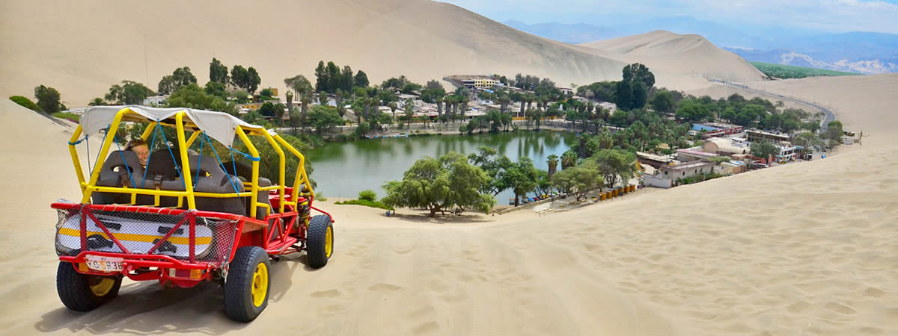

ICA (PERÚ)
Valle de enigmas y buen pisco
Ica es una región conocida por contar con un gran legado histórico del cual surgieron importantes civilizaciones precolombinas. La ciudad de desiertos, playas, oasis y valles, es un territorio lleno de magia que aún sigue sorprendiendo a sus visitantes.
Rodeada de valles hermosos en medio de un oasis en las pampas desérticas del Perú, Ica alberga lugares mágicos como la laguna de la Huacachina, la misma que se caracteriza por el color verde esmeralda de sus aguas, bordeadas por abundante y hermosa vegetación.
La ciudad del eterno sol es famosa también por sus bodegas vitivinícolas donde se fabrican las mejores cosechas de vinos y piscos. Además, posee las enigmáticas Líneas y geoglifos de Nasca y la reserva marina más grande del Perú, albergando a más de 200 tipos de aves y 300 especies de peces.
Su mezcla de misterio, belleza y leyendas, hacen de Ica una ciudad perfecta para vivir experiencias inolvidables.
Ica, más de un motivo para disfrutarla.